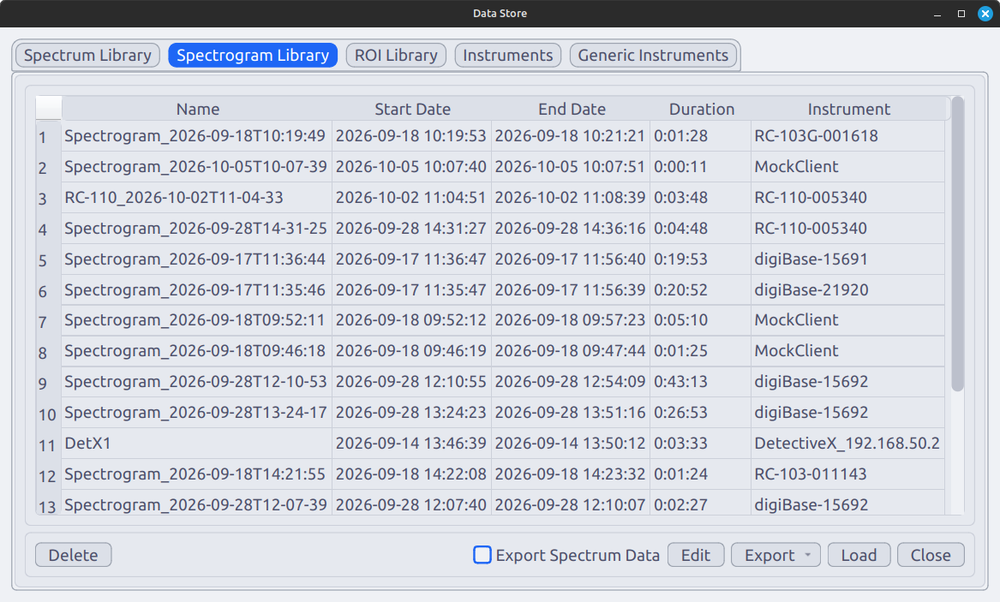
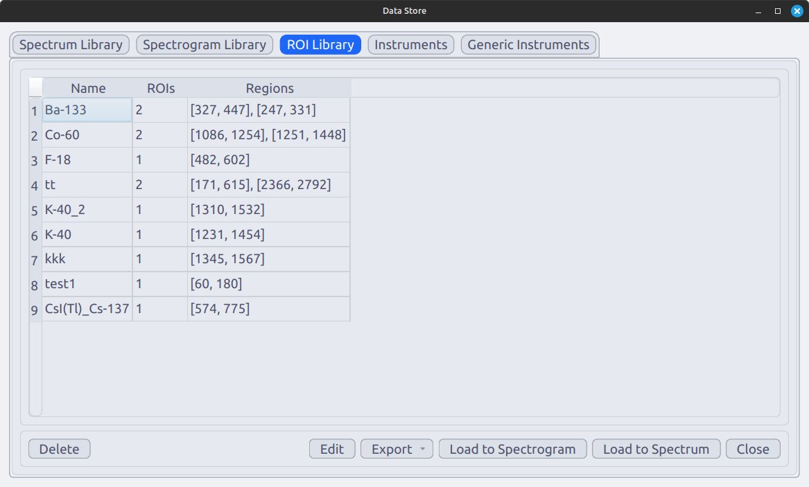
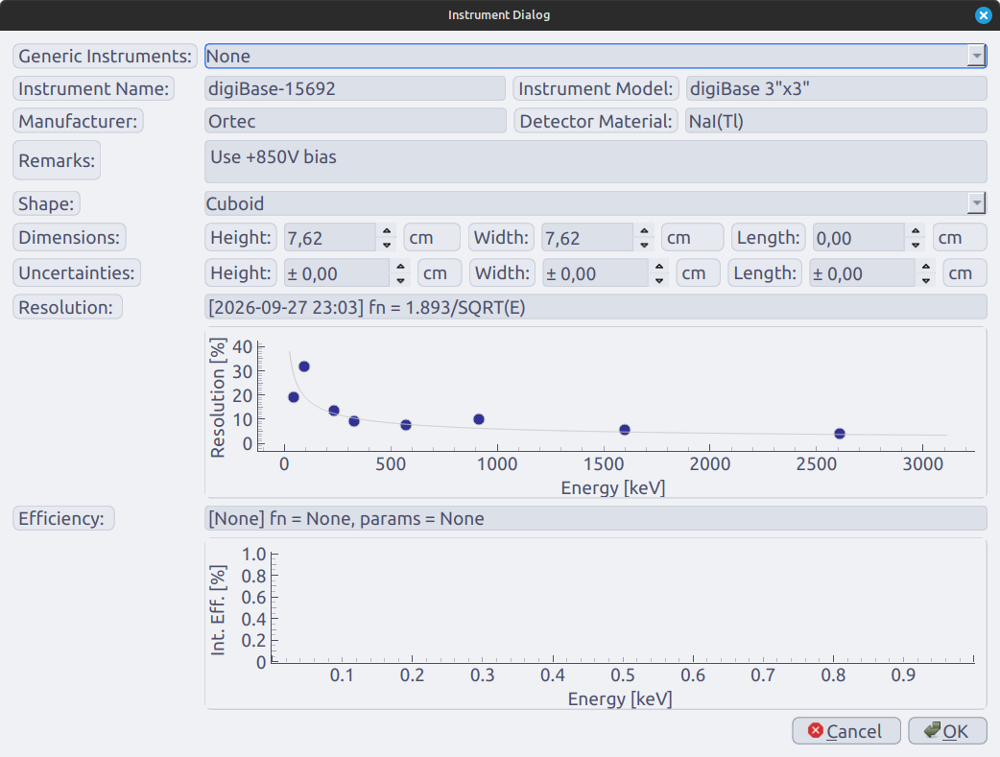

The Data Library allows for saving data objects in the application it self for easy access. It also allows for limited editing of previously saved objects. It contains the following object types Spectra, Spectrograms, ROIs, Unique Instruments and Generic Instruments.
All data items saved in the Data Library can be exported to a single zip-file, with a specific internal structure (see []), using File -> Export Data Library. Such a file can be imported with File -> Import Data Library.
| Field | Description |
|---|---|
| Delete | Remove selected items. |
| Load Instrument | Load the instrument contained in the specific spectrum file. If not selected LuRaCs will attempt to match the instrument name to an existing Unique Instrument save in the Data Library. |
| Load ROIs | Should the ROIs contained in the spectrum be loaded with the spectrum. |
| Edit | Edit the spectrum name or remark. |
| Export | Export the spectrum. Available formats: XML, CSV and xlsx. |
| Load | Load the spectrum into view. |
| Close | Close the data Library. |
| Column | Description |
|---|---|
| Name | Spectrum name |
| Date | Date when the measurement of the foreground started |
| Live Time | Live time of the foreground |
| ROIs | Number of ROIs saved with the spectrum, if any. |
| Instrument | Which instrument is saved with the spectrum if any. If an instrument with the same name already exists in the Data Library, it will be used instead of the instrument saved with the spectrum. This can be changed in setting. |
All created spectrograms are placed in the Spectrogram Library. From here they can be loaded back for analysis or continued measurement.

| Field | Description |
|---|---|
| Delete | Remove selected items. |
| Export Spectrum Data | If checked the data for individual channels are included when exporting, everything else is exported the same. |
| Edit | Edit the spectrogram name. |
| Export | Export the spectrogram to another file. Available formats: .db (SQLite3) and xlsx. |
| Load | Load the spectrum into view. |
| Close | Close the data Library. |
| Column | Description |
|---|---|
| Name | Spectrogram name |
| Start Date | Date when the measurement started. |
| End Date | Date when the measurement was last stopped. |
| Duration | Total measurement duration. |
| Instrument | Identifier for the detector used for acquiring the spectrogram. |
The ROI Library allows for saving references to ROIs. These can later be loaded to a spectrum or spectrogram. This means the roi options, like the energy bounds, fitting options and assigned nuclide, are saved but data like fitting parameters and peak counts are not.

| Field | Description |
|---|---|
| Delete | Remove selected items. |
| Edit | Edit the ROI collection name and the ROIs contained within, see . |
| Export | Export the ROIs to another file. Available formats: .xml. |
| Load to Spectrogram | Load the ROIs as spectrogram ROIs. |
| Load to Spectrum | Load the ROIs as spectrum ROIs. |
| Close | Close the data Library. |
| Column | Description |
|---|---|
| Name | Name of the ROI group. |
| ROIs | Number of ROIs in the group. |
| Regions | The bounds of all ROIs in the group. |

The tabs for the Unique and Generic Instruments are very similar and therefore described in the same section.

| Field | Description |
|---|---|
| Delete | Remove selected items. |
| Edit | Edit an existing instrument, see . |
| Export | Export the instrument data to another file. Available formats: .xml. |
| New | Create a new instrument. Unique Instruments can inherit data from Generic Instruments. |
| Close | Close the data Library. |
| Column | Description |
|---|---|
| Name | Instrument name (Only for Unique Instrument) |
| Model | Name of the instrument model. Ex. RadiaCode-110 or Identifinder R400. |
| Calibration | Shows if the instrument stores an energy calibration. (Only for Unique Instrument) |
| Resolution | Shows if the instrument stores an energy resolution. |
| Efficiency | Shows if the instrument stores an intrinsic efficiency. |
